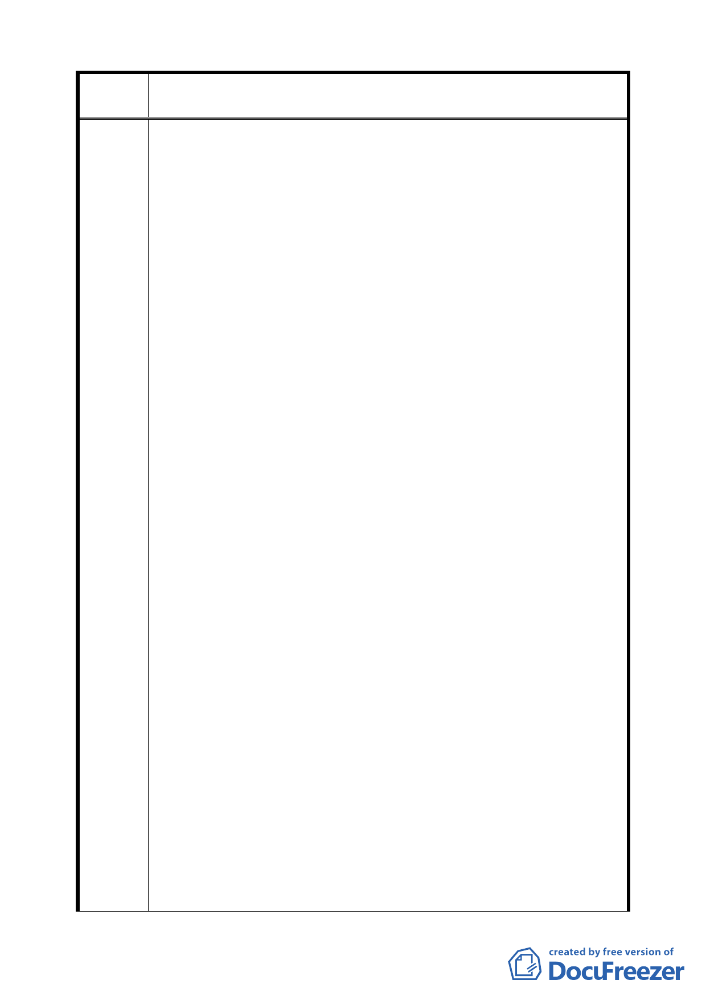

案 名 配合第二代展會中心變更臺北市南港經貿園區特定專用區 C12、
C13 街廓商業區及周邊商業區細部計畫案
畫之訂定，似未考量都市更新實務相關問題，恐將造成我等
無法與 貴府預定街廓土地整併開發，或影響我等可分配之
權益。
以地區編號 A 之允建容積（樓地板面積）與法定應附設停車
位集中移轉設置於地區編號 B、C 街廓，未來在都市更新開發
實務上必定產生下列問題，陳請 貴府聘請學者專家就開發
實務計算，並試以接受基地地主立場評估，是否願意以自身
權益受損之方式接納外來容積移轉？或試以我等立場評估，
未來遭該兩街廓權利關係人拒絕整併開發，或必須以減少我
等可分配權益方式勉強移入，如何處置？
(一)地區編號 A 之允建容積（樓地板面積）與法定應附設停
車位集中移轉設置於地區編號 B、C 街廓後，勢必無法持
分原有地區編號 A 土地，而需持分接受基地之土地，將
稀釋開發後地區編號 B、C 街內每坪樓地板與每車位持分
土地面積，以國人固有「有土斯有財」觀念，是否會造
成對地主實質損失與心理上之影響？
(二)雖規定給予 15%之容積獎勵，然整併開發之建蔽率 45%與
地下室開挖率 55%均較原「擬定南港經貿園區特定專用區
細部計畫」所規定建蔽率 60%與地下室開挖率 70%降低，
將造成接受基地因地面層與地下層樓層數增加所產生每
坪允建樓地板營建成本提高，究竟 15%之容積獎勵可否彌
補營建成本之增加？
(三)未來開放空間集中留設於地區編號 A 土地，地區編號 A
土地地主對於此開放空間是否仍保有其所有權？未來因
開放空間直接供第二代展會中心整體使用，有關其開發
與管理義務之歸屬？所留設開放空間是否得適用都市更
新相關規定計算開放空間獎勵？如能適用時，如何計
算？
(四)時程獎勵較「臺北市都市更新自治條例」時程獎勵最多
增加 8%，然因範圍擴大後權利關係人人數增多，提高都
市更新整合作業之困難度，恐將造成整合作業時程之延
宕，能否順利於所定期限內整合一定比例權利關係人後
提出申請，爭取最高 15%之容積獎勵，實有困難。
三、查 貴府曾決策為加速臺北市都市更新發展，決定放寬容積
獎勵，凡於臺北市政府規劃的策略發展地區內願出資建設公
共設施者，均可提案申請，臺北市政府計畫將尚未利用的
3,000 公頃容積於明年初開始分區、分階段釋出。經查南港經
7